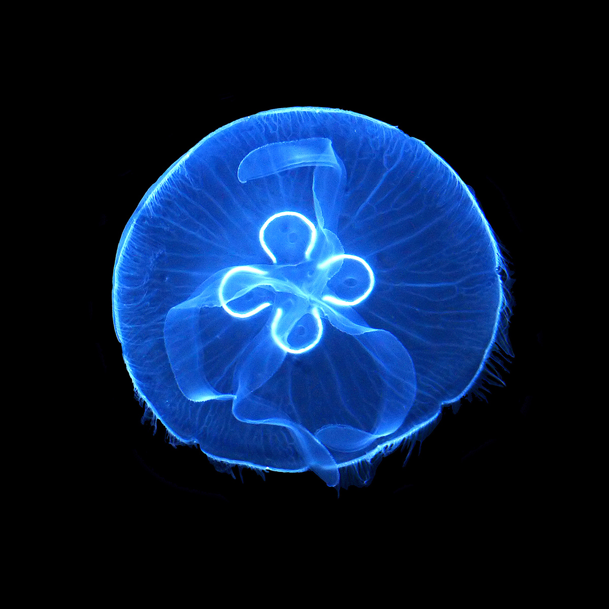
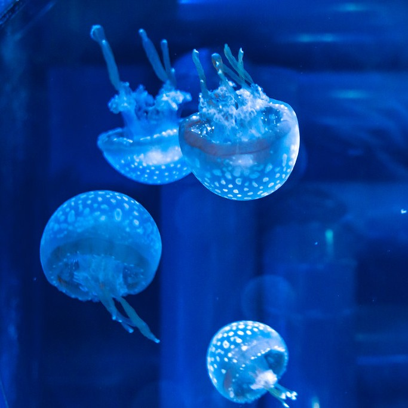
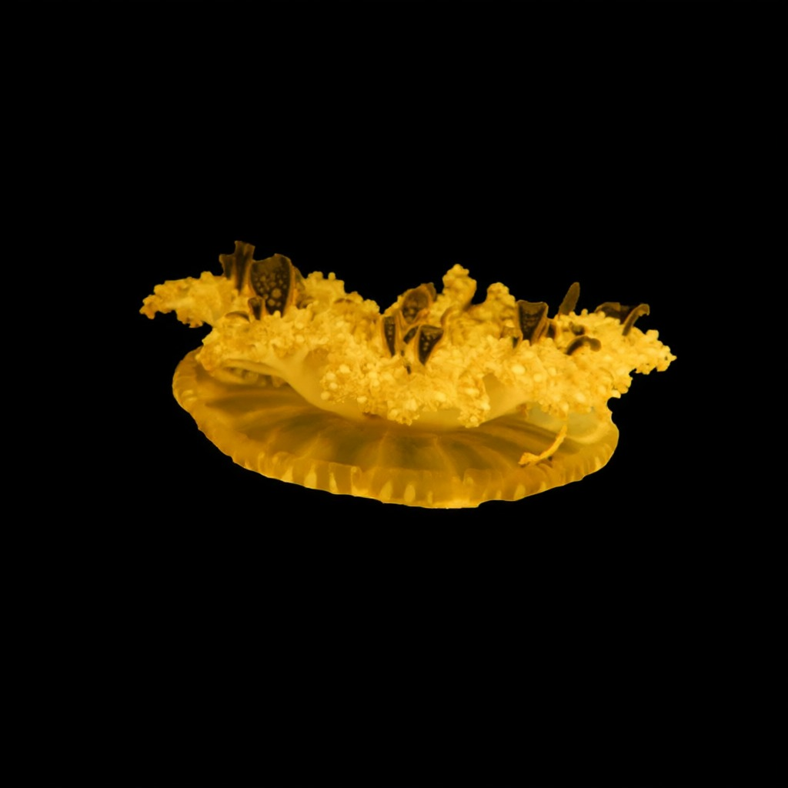
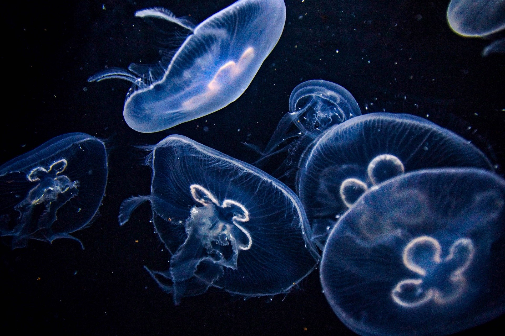
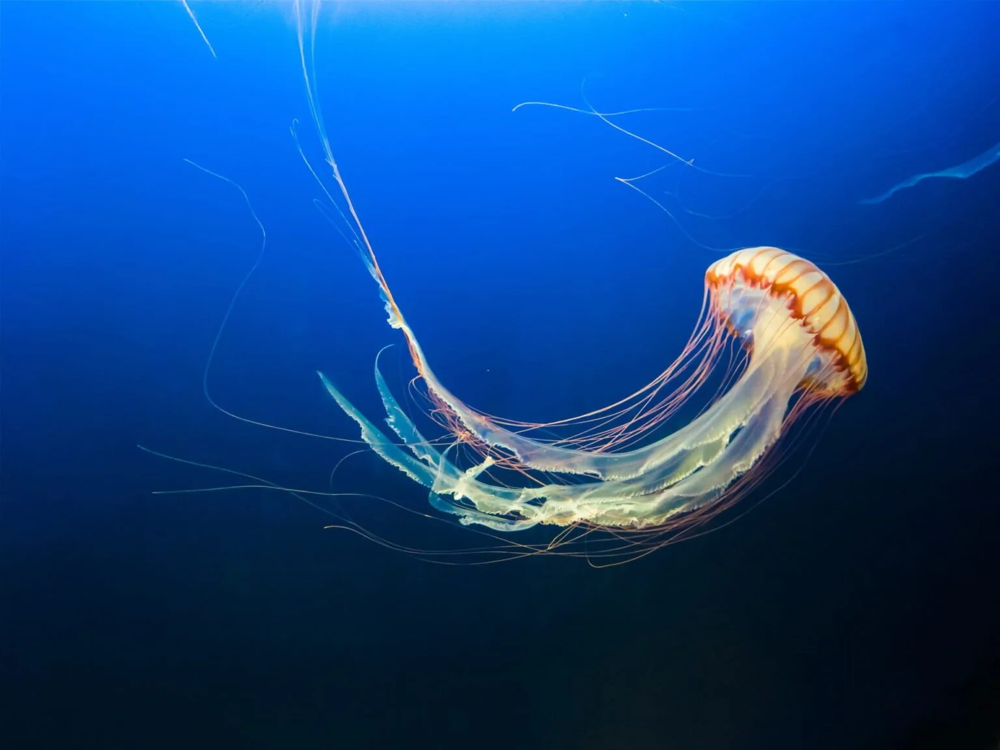
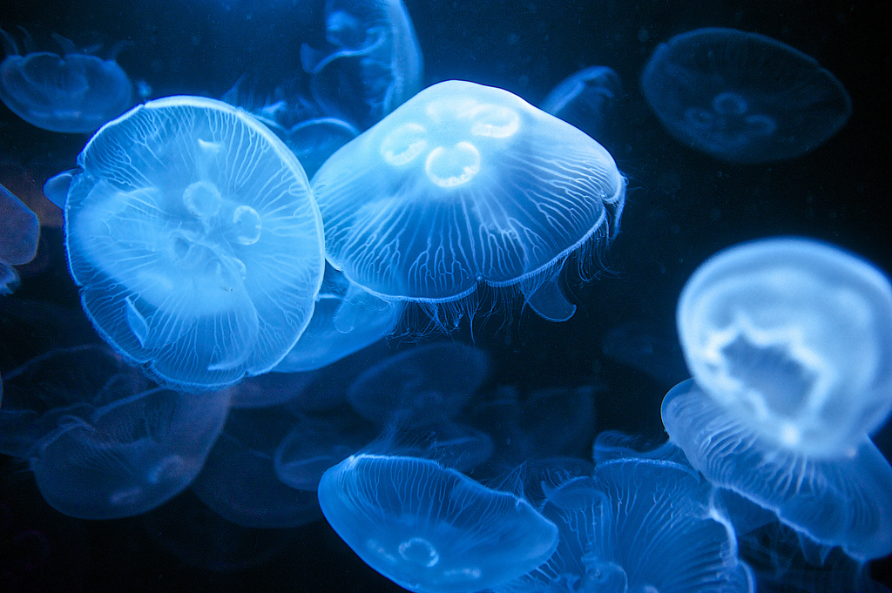
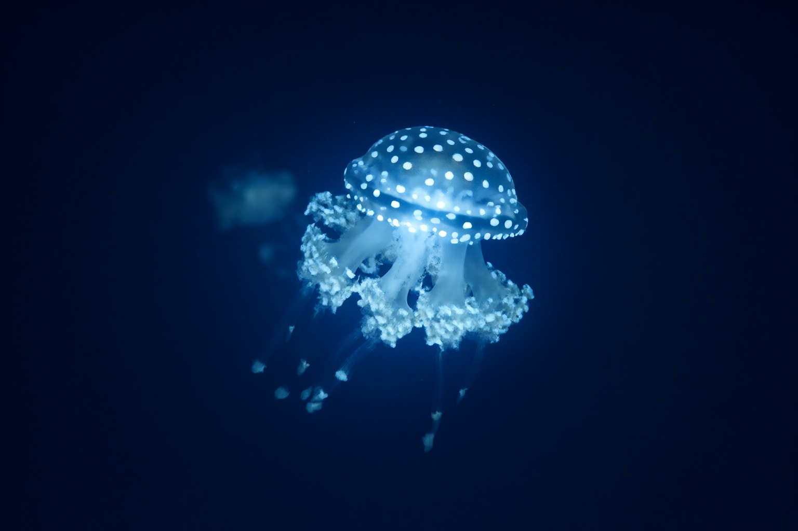
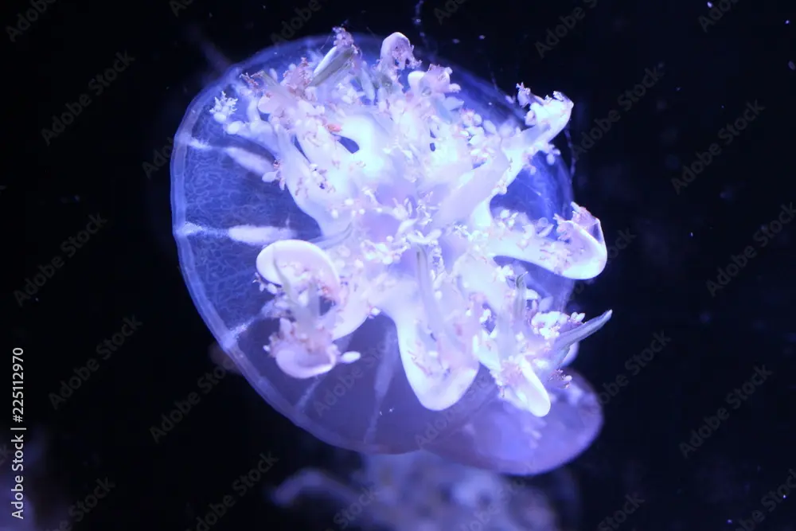
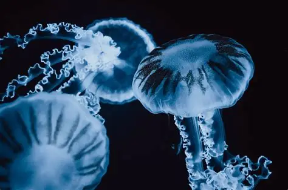

Medúzy nejsou jen exponátem — v naší záchranářské stanici slouží jako indikátor stavu mořského prostředí i jako cvičný materiál pro záchranáře, kteří se učí rozpoznávat nebezpečné druhy a poskytovat první pomoc při popálení. Proto k výběru jedinců, jejich péči a testování přistupujeme stejně zodpovědně jako k jakémukoli jinému chovu.
Jedinec musí mít neporušený zvon, symetrická ramena a žádné známky plísňové nebo bakteriální infekce.
Upřednostňujeme jedince z odchovů v zajetí nebo z legitimních sběrů; volně žijící populace neodebíráme bez povolení.
Pro záchranářské účely vybíráme druhy, které jsou bezpečné pro manipulaci a jejichž chování lze spolehlivě sledovat.

Narodila se 14. 3. 2019 a je klidná, pomalá a málokdy se rozruší; nechá se unášet proudem a nikam nespěchá, spíš je to trochu samotářka. Test regenerace ramen zvládla 12. 6. 2025 a kontrola symetrie zvonu byla 3. 2. 2026 v normě. Přežila tři roky v proměnlivé salinitě, mateřská kolonie vyprodukovala přes 2 000 efyr a používá se jako referenční druh při výuce. Její dceřiná linie „Aur-7" má potomky ve dvou akváriích.
899kč Rodokomen
Narodila se 2. 8. 2021 a je zvídavá a aktivní, neustále krouží kolem světla a má sklony k dramatu, když se změní proudění. Kontrola symbiózy se zooxanthellami dopadla 20. 9. 2025 výborně a test fototaxe zvládla 18. 1. 2026. Má nejrychlejší růst zvonu v celé skupině, úspěšně se adaptovala na umělé osvětlení a je hvězdou návštěvnických prohlídek. Je matkou linie „Papua-B", která dala vzniknout pěti generacím v zajetí.
1000kč Rodokomen
Narodila se 30. 5. 2020 a je tvrdohlavá a usedlá; sedí dnem vzhůru a odmítá se hýbat, dokud ji k tomu nedonutí hlad, tak trochu introvert. Test pulzace zvládla 7. 4. 2025 a kontrola adherence k substrátu prošla 11. 11. 2025. Drží rekordně dlouhou nepřetržitou pulzaci 72 hodin a úspěšně se regenerovala po poškození ramen. Je zakladatelkou klanu „Cass-1", nejstarší dochované linie v chovu.
899kč Rodokomen




